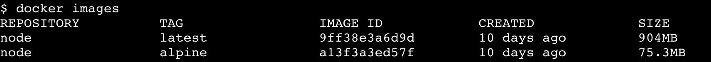

Dockerfileのベストプラクティス
この章ではDockerfileを記述する際のベストプラクティスについて記述します。
軽量なイメージを作る¶
Docker Image はレイヤーが少なくサイズが軽いものが良いものだとされています。
レイヤーを増やすことはオーバーヘッドに繋がり、サイズはImageのpullの速度に繋がります。
どのようなアプローチでDocker Image を作成すると良いかを見ていきましょう。
最小限の構成にする¶
例えばPHPの環境を構築するのにCentOSのベースイメージで、phpenvを入れて、MySQLを入れて、、といったことは非推奨です。
DockerはいままでのVMとは思想が異なります。1コンテナ1プロセスになるように設計を行いましょう。
複数のプロセスを使用したい場合はそれぞれコンテナに分け、オーケストレーションツールを使用してコンテナを協調させて動かしましょう。
軽量なベースイメージを使用する¶
Alpine OS という非常に軽量なOSが存在します。
まずはこのAlpine OS がベースとなっているDocker Image を使いましょう。
メジャーな言語は一通りAlpineOSに対応しており、Node.jsも例に漏れず対応しております。
(nodeのDocker Image が12倍の差があります)

.dockerignoreを使う¶
Dockerのビルド時に無視するファイル/ディレクトリを指定することができます。
".git" のようなコンテナ内に不要な情報、 "node_modules" のような上書きされると困るものを記述します。
.dockerignore は基本的に .gitignore と同じ書き方が可能です。
.git/
node_modules/
Build¶
キャッシュを意識する¶
Docker Image は各コマンド毎にキャッシュを作成します(これを中間レイヤーと呼びます)。
ビルド後に、コマンドの変更・ファイルの追加/更新など、なにか変化を起こすと、変化が起こったレイヤーの直前のキャッシュからビルドを実行します。
例えば単純な依存ライブラリのインストールだけ行えば問題ないNode.jsのアプリケーションがあったとします。
開発中は頻繁にコードの変更を行うはずです。コードの変更を行えばせっかく作成したキャッシュが効かなくなってしまい、ビルドのし直しになってしまいます。
単純な npm install が必要なアプリケーションであれば package.json と package-lock.json だけをコンテナ上へコピーして、その後スクリプトのコピーを行うと高速なビルドを実現できるでしょう。
FROM node:slim
WORKDIR /scripts
- COPY . .
+ COPY ./package.json ./package-lock.json /scripts/
RUN npm install
+ COPY . .
CMD ["npm", "start"]
Multi-Stage Build¶
Golangのようなビルドを行い成果物をバイナリとして吐き出す言語であれば、最小限のOSと成果物のバイナリの2つだけで動作します。
この2つだけの最低限の環境を用意するために活躍するのがMulti-Stage Buildです。
Multi-Stage Buildは複数のDocker Image を作り、最終的にその複数のDocker Image から任意のファイルだけを抽出して1つのDocker Image にします。
#==================================================
# Build Layer
FROM golang:1.12-alpine as build
WORKDIR /go/app
COPY . .
RUN apk add --no-cache git \
&& go build -o app
#==================================================
# Run Layer
FROM alpine
WORKDIR /app
COPY --from=build /go/app/app .
RUN addgroup go \
&& adduser -D -G go go \
&& chown -R go:go /app/app
CMD ["./app"]
おまけ¶
軽量かつプロダクションを意識したイメージの例
Dockerfile¶
FROM node:alpine
ARG UID=991
ARG GID=991
ENV NODE_ENV=production
WORKDIR /scripts
COPY package.json package-lock.json /scripts/
RUN npm install --production --no-progress
COPY . .
RUN addgroup app -g ${GID} \
&& adduser -D -G app -u ${UID} app \
&& mv /root/.config /home/app/ \
&& chown -R app:app /scripts /home/app/.config
USER app
EXPOSE 3000
CMD ["npm", "start"]
.dockerignore
.git/
node_modules/
イメージの確認
$ docker build -t myapp:4 .
:
$ docker images myapp
REPOSITORY TAG IMAGE ID CREATED SIZE
myapp 4 9eb407f3406a 9 seconds ago 90MB
myapp 3 87ea6e63c875 32 minutes ago 160MB
myapp 2 919f447ae003 About an hour ago 160MB
myapp 1 61d3ff752744 About an hour ago 916MB
$ docker history myapp:4
IMAGE CREATED CREATED BY SIZE COMMENT
9eb407f3406a 24 seconds ago /bin/sh -c #(nop) CMD ["npm" "start"] 0B
32d79cd696ee 25 seconds ago /bin/sh -c #(nop) EXPOSE 3000 0B
ba11be6658e8 25 seconds ago /bin/sh -c #(nop) USER app 0B
10aaa4ed01f2 25 seconds ago |2 GID=991 UID=991 /bin/sh -c addgroup app -… 6.04MB
beba948fcdf5 28 seconds ago /bin/sh -c #(nop) COPY dir:4031660d2eb87dd44… 30.1kB
d208f024298c 4 minutes ago |2 GID=991 UID=991 /bin/sh -c npm install --… 7.8MB
499f23e1c8b9 4 minutes ago /bin/sh -c #(nop) COPY multi:7bbf60d9ee13776… 26.2kB
0989832456ac 4 minutes ago /bin/sh -c #(nop) WORKDIR /scripts 0B
8b17881bf747 4 minutes ago /bin/sh -c #(nop) ENV NODE_ENV=production 0B
6a42c9764263 4 minutes ago /bin/sh -c #(nop) ARG GID=991 0B
b740f7e04562 4 minutes ago /bin/sh -c #(nop) ARG UID=991 0B
953c516e1466 30 hours ago /bin/sh -c #(nop) CMD ["node"] 0B
<missing> 30 hours ago /bin/sh -c apk add --no-cache --virtual .bui… 5.1MB
<missing> 30 hours ago /bin/sh -c #(nop) ENV YARN_VERSION=1.15.2 0B
<missing> 30 hours ago /bin/sh -c addgroup -g 1000 node && addu… 65.4MB
<missing> 31 hours ago /bin/sh -c #(nop) ENV NODE_VERSION=11.13.0 0B
<missing> 3 weeks ago /bin/sh -c #(nop) CMD ["/bin/sh"] 0B
<missing> 3 weeks ago /bin/sh -c #(nop) ADD file:88875982b0512a9d0… 5.53MB